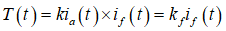
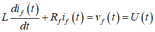
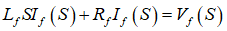
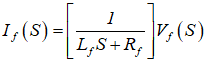
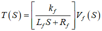
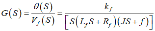
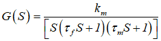
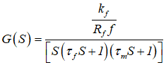

To obtain the transfer function of a field controlled DC shunt motor.
SOFTWARE/SIMULATION PLATFORM:
MATLAB/SIMULINK
THEORY:
(Refer theory about transfer function of armature controlled DC motor )
Refering to the figure 1, if the armature current ia is kept constant and the input voltage is applied to the field circuit, the motor is called field controlled DC motor. The torque T generated by the motor is given by,
 ....(1)
Where kf = k ia , a constant.
 ....(2)
From the field circuit,the application of Laplace transform to (1) and (2) with zero initial conditions yields,
....(3)
Therefore,
 ....(4)
 ....(5)
 ....(6)
....(7)
Application of Laplace transform to equation (2) gives the torque, where J is the total moment of inertia of the load, shaft and rotor of the motor, f the viscous friction co-efficient of the bearing and angular displacement of the load.
From (3), (4) and (5) the transfer function of the field controlled dc motor driving a load is given as,
 ....(8)
 ....(9)
 ....(10)
Where
f --------electrical time constant
m ----------- motor mechanical time constant.
Block diagram of field controlled dc motor is shown in figure 2
1.Make the connections as shown in circuit diagram.
2.By observing the precautions switch ON the supply.
3.Reduce the armature rheostat to minimum value gradually
4.Adjust the field rheostat to different values of field current and note down the speed ammeter and voltmeter readings. Throughout this the armature current should remain constant. Tabulate the readings.
5.Draw the graphs, field current versus Torque and angular velocity versus torque.
6.Slope of the field current versus torque gives the value of kf
7.The intercept of the plot angular velocity versus torque with Y axis gives the value of A and its slope gives the value of f.
Retardation Test :
1.Make the connections as shown in circuit diagram.
2.By observing the precautions switch ON the supply.
3.Machine is made to run just above rated speed for the specific value of armature current.
4.Then the SPSTS is opened. The speed at uniform time intervals are taken until the machine comes to a standstill.
To find Lf :
1.Make the connections as shown in fig.2.
2.By observing the precautions ( i,e Initially the auto-transformer should be in minimum voltage position ) switch on DPSTS.
3.By varying the auto- transformer position in steps, values of ammeter and voltmeter readings are taken. ( Refer : Table 2 )
4.The ratio of voltage to current gives the impedance ,Zf of the motor field winding


 ....(3)
....(3)
 ....(7)
....(7)